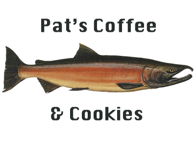

Background image URL: rain-clouds.png
logo image source: salmon-cookies-logo.png,

font-family: 'Ubuntu', sans-serif;,
font-weight: ,
color: #282e2b;
font-family: 'Ubuntu', sans-serif;,
color: #282e2b;
Use this for the h1 headlines.
font-family: 'Bitter', serif;
color: #ba6e40
Use this for the h2 headlines.
font-family: 'Questrial', sans-serif;
color: #8d8d8d80;
Use this for the h4 headlines.
font-family: 'Nunito', sans-serif;
color: #282e2b;
Use this for body copy.
font-family: ,
color: #282e2b;
Use this for data.
Official colors for Pat's Coffee & Cookies Shops